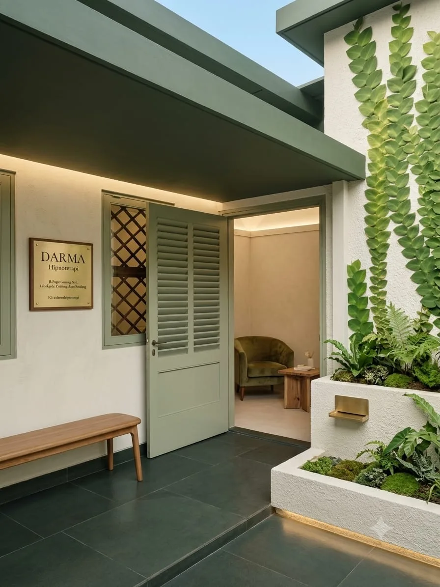
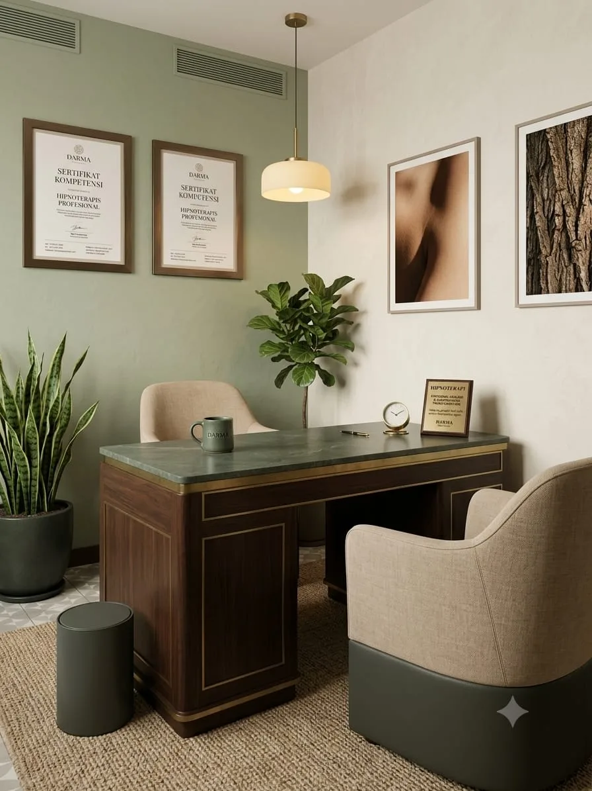
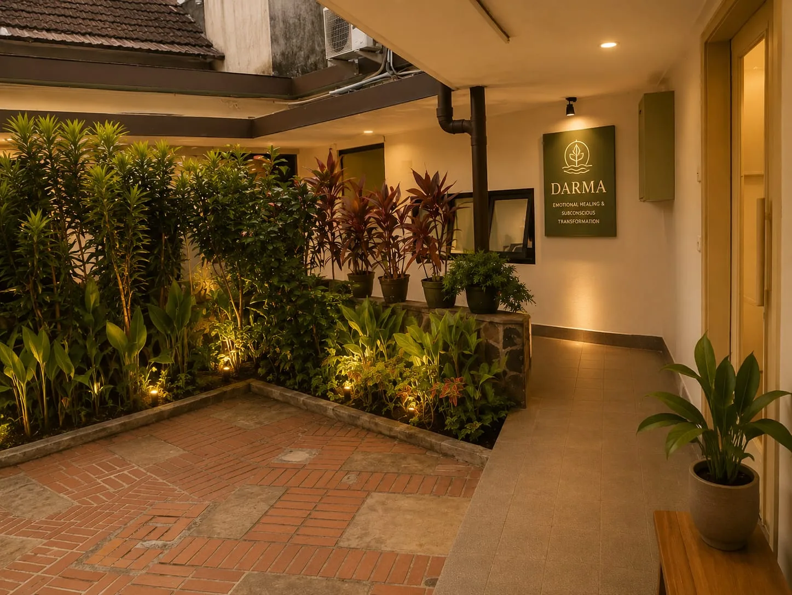

Menganalisis setiap kemungkinan. Memutar ulang setiap percakapan. Mengantisipasi setiap hal buruk. Hipnoterapi membantu pikiranmu akhirnya bisa diam.
Overthinking punya banyak wajah. Kenali mana yang paling sering kamu alami.
Memutar ulang kejadian atau percakapan yang sama berkali-kali, mencari "apa yang seharusnya saya katakan/lakukan".
Selalu membayangkan skenario terburuk dari setiap situasi, bahkan untuk hal-hal kecil yang belum tentu terjadi.
Terus menganalisis apa yang orang lain "sebenarnya" pikirkan tentang kita, tanpa bukti nyata.
Terlalu banyak menimbang pilihan sampai sulit mengambil keputusan, bahkan untuk hal sederhana.
Pikiran menjadi sangat aktif begitu berbaring di malam hari — menganalisis seluruh hari atau mengkhawatirkan esok.
Terus mengulang dan memeriksa pekerjaan atau keputusan karena takut ada yang kurang sempurna.
Sesi hipnoterapi dilakukan di ruang yang dirancang khusus untuk ketenangan — pencahayaan hangat, kursi yang nyaman, dan suasana yang membantu pikiranmu perlahan melepaskan kendali yang terlalu erat.
Di ruang inilah kita mulai mengurai pola pikiran yang sudah bertahun-tahun berputar tanpa henti — satu sesi pada satu waktu.

"Heal within. Transform beyond." — Ruang sesi Hipnoterapi Bandung, Bandung.
Pikiran yang terus aktif di malam hari menghalangi istirahat yang sesungguhnya.
Energi mental terkuras untuk hal yang sudah terjadi atau belum tentu terjadi.
Terlalu sibuk di kepala sendiri untuk benar-benar hadir bersama orang yang dicintai.
Overthinking sangat melelahkan secara mental — meski tidak terlihat dari luar.
Overthinking adalah kebiasaan pikiran yang terbentuk dari waktu ke waktu — dan kebiasaan itu bisa diprogram ulang di level bawah sadar.
Kita identifikasi situasi apa yang paling sering memicu overthinking dan pola pikir spesifik yang berulang.
Membawa pikiran ke kondisi yang jauh lebih tenang dari relaksasi biasa — di mana "gerbang kritis" yang terlalu aktif bisa melemah sejenak.
Memutus pola otomatis "analisis berlebihan" yang sudah terprogram dan menggantinya dengan respons yang lebih proporsional.
Diajarkan teknik sederhana yang bisa langsung dipakai saat overthinking mulai muncul — untuk menginterupsi siklus sebelum berputar lebih jauh.
Overthinking terasa seperti memberi perlindungan — seolah dengan menganalisis semua kemungkinan, kita bisa mencegah hal buruk terjadi. Tapi pada kenyataannya, overthinking lebih banyak menciptakan penderitaan daripada solusi. Masalahnya, ini adalah kebiasaan pikiran yang sudah terprogram secara otomatis — sulit dihentikan hanya dengan "berusaha berhenti".
"Kamu tidak bisa menyuruh pikiranmu untuk berhenti berpikir. Tapi kamu bisa mengubah pola di bawah sadar yang membuat pikiran terus mencari masalah untuk dipikirkan."
Di Hipnoterapi Bandung, overthinking adalah salah satu kondisi yang paling sering kami tangani — sering bersamaan dengan kecemasan atau insomnia. Klien dari Cimahi, Lembang, dan seluruh Bandung melaporkan pikiran yang jauh lebih tenang setelah beberapa sesi.
Overthinking sering menjadi gejala dari kecemasan yang mendasarinya — tapi tidak selalu. Beberapa orang overthinking karena perfeksionisme atau kebiasaan analitik yang berlebihan, bukan karena kecemasan murni. Assessment awal membantu menentukan pendekatan yang paling tepat untuk kondisimu.
Pikiran saya tidak pernah bisa diam — terus memutar ulang percakapan dari berhari-hari lalu. Baru sesi kedua, untuk pertama kalinya saya bisa duduk tenang tanpa pikiran berputar.
Setiap malam adalah perang dengan diri sendiri — menganalisis seluruh hari sampai larut. Sekarang saya bisa tidur tanpa pikiran yang terus berputar.
Saya bisa habis berjam-jam memikirkan keputusan kecil. Setelah hipnoterapi, saya jauh lebih mudah memutuskan tanpa terjebak analisis berlebihan.
Ya. Hipnoterapi bekerja langsung pada pola pikiran bawah sadar yang terus menganalisis dan mengantisipasi kemungkinan buruk. Hasilnya pikiran yang lebih tenang dan kemampuan untuk benar-benar beristirahat.
Overthinking adalah pola pikiran yang terus menganalisis dan mempertimbangkan berlebihan — sering menjadi gejala kecemasan, namun bisa juga berdiri sendiri sebagai kebiasaan berpikir.
Banyak klien merasakan ketenangan pikiran yang signifikan dalam 2-3 sesi. Paket standar 3 sesi untuk hasil yang lebih stabil dan berkelanjutan.
Hipnoterapi bisa mengurangi frekuensi dan intensitas overthinking secara signifikan. Sebagian sifat analitik mungkin tetap ada sebagai bagian dari kepribadian — tapi tidak lagi mengendalikan hidupmu.
Dirancang untuk membantu pikiranmu belajar berhenti — bukan dengan paksaan, tapi dengan mengubah pola di akarnya.
3 sesi terstruktur · Spesialis pola pikiran
Rp 4.500.000 Rp 3.500.000/ 3 sesi intensif

Hipnoterapi Bandung
Bukan tentang berhenti berpikir sepenuhnya — tapi tentang mengembalikan kendali, sehingga pikiranmu bekerja untukmu, bukan melawanmu.
WA 0819 1433 3399